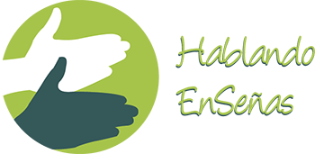

Capacitación del talento humano dedicado a la atención del usuario y/o servicio al ciudadano e inclusión laboral de personas en condición de discapacidad.


Somos una empresa comprometida con la inclusión social e igualdad de condiciones, que respeta las diferencias, cuyo enfoque principal es la Comunidad Sorda y su acceso a la comunicación e información.
Hablando EnSeñas SAS tiene tres condiciones comunicativas, cuando usted habla a través de su voz, cuando comunica a través de sus manos y cuando usted aprende a través de la enseñanza de la Lengua de Señas Colombiana. Estas condiciones dan como resultado el poder brindar una comunicación efectiva.
Nuestro grupo de trabajo se encuentra conformado por un equipo interdisciplinario altamente calificado, integrado por personas sordas y oyentes quienes ponen a su disposición todo su talento y experticia.
Contribuir a una sociedad inclusiva eliminando barreras de comunicación a través de la producción audiovisual accesible, y establecer programas, planes y proyectos que incidan en el restablecimiento de los derechos de las Personas Sordas del país.
Hablando EnSeñas SAS será en el 2020 una entidad líder reconocida como gestora de comunicación accesible, activista de los derechos de las personas con discapacidad enfocando su mirada a la Comunidad Sorda y como promotora de alianzas estratégicas en el territorio nacional e internacional, con sentido social.
Leer más sobre Visión1. Ejecutar programas, planes y proyectos accesibles.
2. Capacitar a empresas naturales y jurídicas a través de la enseñanza de la Lengua de Señas Colombiana.
3. Promover la enseñanza del español como segunda lengua de la persona sorda.
Leer más sobre ObjetivosCapacitación del talento humano dedicado a la atención del usuario y/o servicio al ciudadano e inclusión laboral de personas en condición de discapacidad.
Cursos de lengua de señas colombiana LSC con instructores sordos, objetivos:

Entendiendo la importancia de la comunicación efectiva de sus ideas o productos, realizamos la provisión de intérpretes para los diferentes eventos que realice su organización; nuestro equipo humano es altamente capacitado con gran experiencia y reconocimiento ante la comunidad sorda, lo que garantiza veracidad y calidad de la información transmitida.
En cumplimiento de lo ordenado en la ley 1618 de 27 de febrero de 2013 que establece “las disposiciones para garantizar el pleno ejercicio de los derechos de las personas con discapacidad”, nuestra empresa contribuye en la identificación y realización de los ajustes razonables necesarios, que permitan el goce efectivo sin limitaciones de estos derechos por parte de la población discapacitada.
 Contenidos Accesibles:
Contenidos Accesibles:Adaptación de piezas audiovisuales existente convirtiendo su contenido en accesible mediante la Implementación de Lengua de señas colombiana, voz off, subtitulación y audio descripción.
Adaptación espacial de las diferentes áreas y espacios físicos de su organización, implementando circulaciones, rampas, baños, estaciones de trabajo y mobiliarios para usuarios en condición de discapacidad.
Número de visitas: